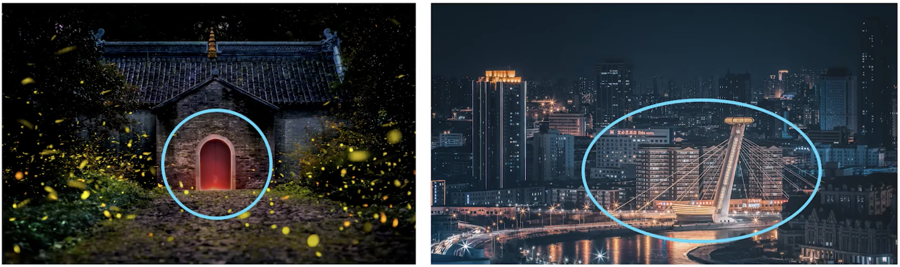
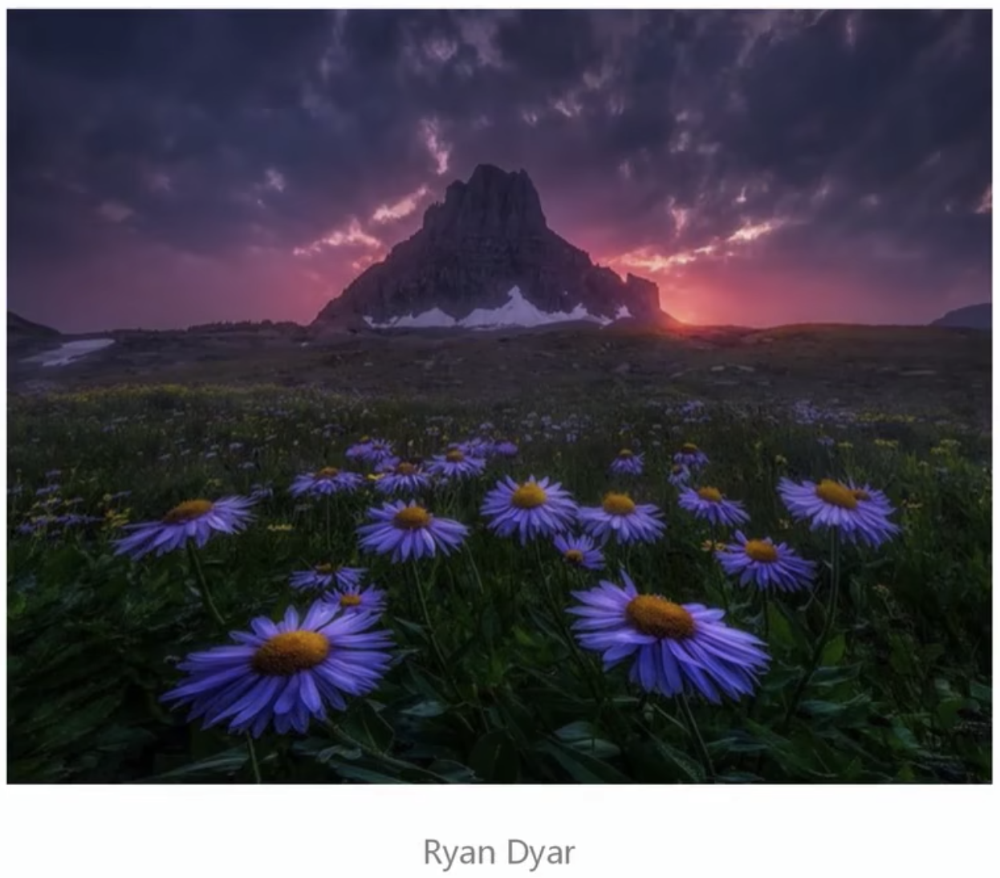

1 相机 & 传感器 & 镜头
1.1 常见相机种类
按是否可换镜头：
- 可换镜头相机
- 微单相机
- 单反相机
- 不可换镜头相机
- 运动相机
- 卡片机
按传感器（CMOS）大小：
按品牌：
微单 vs 单反
- 光学机构不同：单反可以利用反光镜和五棱镜来进行取景，也可以直接将光线传到传感器，而微单只有后一种方式。
- 微单体积更小
1.2 常见镜头种类
按品牌：
按焦距：焦距越短，视角越大，单个主体越小，焦距越大则相反。
其他分类：
- 变焦与定焦
- 手动对焦与自动对焦
- 恒定光圈与浮动光圈
认识镜头上的参数
变焦镜头
大三元：
- 16-35/14-24 F2.8
- 24-70 F2.8
- 70-200 F2.8
小三元：
- 16-35/11-24 F4
- 24-70 F4
- 70-200 F4
其他：
- 18-55（套头）
- 100-400
- 150-600
定焦镜头
特种镜头
微距镜头、移轴镜头
2 一些名词
2.1 关于相机和器材的名词
像素
像素越高，图片越清晰，有更多的裁剪空间，进行大图的打印输出。
但是高像素的缺点也有：
- 储存空间的压力
- 后期修图的压力
宽容度与动态范围
宽容度：相机本身能够容纳（记录）的从最亮到最暗的范围
动态范围：成像照片或现场场景中最亮到最暗的范围
宽容好比一把尺子，动态范围好比用尺子去测量的范围。
宽容度更好，能容纳更大的动态范围，记录更多的明暗细节。
转接环
不同厂商、单反微单镜头之间的转接需要通过转接环。
2.2 相机的评判要点
外观及重量
便携性与耐候性
体验与操控性
画质与像素
对焦与连拍
视频性能
拓展接口及镜头系统
2.3 关于拍摄和操作的名词
拍摄格式
联机拍摄
拍摄人像、静物等室内拍摄活动时，可以把相机连接到手机、电脑，实时查看相机拍摄的画面和信息。
Capture One是比较好使的联机拍摄软件。
也可以使用官方的APP，用手机进行无线连接。
3 基础相机操作指南
3.1 熟悉及设置手中相机的思路
熟悉相机：
- 了解按钮的位置和作用
- 查看菜单，知道常用的设置都在哪里，多找找
- 形成肌肉记忆，多用一用
通用设置思路：
- 设置双卡记录
- 设置RAW格式记录
- 关闭长时间曝光降噪
- 自定义
3.2 相机基础操作
正确握持
相机部位名称
4 常用器材附件
4.1 支撑系统
三脚架
云台

快装板
4.2 滤镜系统
圆形：对应镜头的口径去选择
方形：通用
UV镜
CPL
消除反光
ND
减光，延长曝光时间
4.3 灯光系统
闪光灯
常亮灯
束光附件
灯架
4.4 其他附件
快门线
储存设备
清洁套装
转换螺丝及扳手
电池

快拆肩带

背包
5 手机摄影
5.1 手机摄影和相机摄影的区别
手机摄影的优势：
- 简单易上手，没有复杂参数
- 小巧轻便随身
- 快速修图，快速分享
- 方便特殊角度拍摄，攻击性弱
劣势：
- 画质很难满足商业摄影需求
- 光学结构限制，对虚化等支持不如相机
- 传感器小，弱光下效果不好
- 无法满足特殊拍摄场景
5.2 手机镜头
5.3 手机拍摄特性
- 超广角
- 超长焦
- 暗光/夜景
- 长曝光
- 智能算法
- …
5.4 常用设置
- 打开参考线
- 关闭自动添加水印
- 关闭闪光灯
- 打开熄屏快拍
5.5 附件
附加镜
小三角架，手机夹
蜗牛云台，魔术手
6 焦距 & 透视 & 畸变
6.1 焦距
焦距与视角
常见焦距
16mm：超广角大景，风光
24mm：室内建筑
35mm：人文视角，街拍
50mm：人像场景
85mm：人像特写
200mm：长焦，动物，细节
400mm：超长焦，体育，动物，月亮
一个观点：任何焦段都可以拍摄任何题材，只是看使用频率而已。
等效焦距
将不同物理焦距的镜头，放在了不同传感器大小的相机上，就会出来实际成片的视角和画面容纳范围，称为等效焦距。
6.2 透视
透视无处不在，二维平面描述三维世界时，都会利用到透视效果。
透视的核心：近大远小
一点透视（平行透视）
画面中只有一个消失点，画面中不平行于照片平面的线都汇聚于这个消失点；有竖直面平行于照片平面。
两点透视（成角透视）
两个消失点，画面中不平行于照片平面的线汇聚于这两个消失点的其中一个；有竖直线平行于照片平面。
三点透视
影响透视的核心因素：距离
透视与焦距没有关系：
为什么广角透视感比长焦要强？因为长焦离得远，距离远，透视感更弱。因此可以使用长焦让透视感最弱，达到平行投影：
透视的启发
建筑拍摄时的横平竖直。
使用透视来提升画面的冲击感。
注意空间的层次关系。
6.3 畸变
畸变对于画面的影响：
透视 vs 畸变
7 曝光
7.1 什么是正确的曝光
主观感受的判断标准：
- 主体元素正确曝光
- 场景的观感还原
- 暗部不死黑，亮部不死白
7.2 曝光三要素
水龙头接水，水压的大小，水龙头的直径，打开水龙头的时间都能影响接到的水量。
与之类似，曝光就是我们要接的水的多少，感光度是水压的大小，光圈大小是水龙头的直径，快门速度是打开水龙的时间，这三个因素影响了最终的曝光量。
光圈（Aperture）
快门（Shutter Speed）
感光度（ISO）
互易率
档位：
- 光圈：每档之间是$\sqrt{2}$倍的关系，每提升一档光圈，上升两档亮度。
- 快门：每档之间是2倍的关系，每提升一档快门，上升两档亮度。
- 感光度：每档之间是2倍的关系，每提升一档快门，上升两档亮度。
手机曝光两要素：快门和感光度
7.3 曝光补偿
即确定要接多少水量，控制画面的最终亮度。
同时也是快速调节画面的方式，因此一般在曝光不太正确，不是最终理想亮度的情况下使用，还可以作为目标亮度的参考。
有时候会进行白+黑-，即白色物体添加曝光补偿，黑色物体减少曝光补偿。
8 拍摄模式
8.1 相机常用曝光组合
为什么会有拍摄模式/曝光组合？将一部分曝光控制交给相机，简化我们的拍摄，减轻压力。
Auto - 全自动
光圈、快门、ISO全交给相机控制。
一般不考虑使用。
P - 程序曝光，半自动
可以手动控制ISO。
适合旅行，抓拍，比较简便。
A/AV - 光圈优先
可以手动控制光圈、ISO。
适用于绝大多数场景。
S/TV - 快门优先
可以手动控制快门、ISO。
适合抓拍，体育，新闻，野生动物。
M - 手动曝光
可以手动控制光圈、快门、ISO。
B - B门，长时间曝光
30s以上的效果，按下快门直到松开一直曝光。
C - 自定义模式
注册之前的档位加上常用的参数。
8.2 手机常用拍摄模式
焦距：
- 数码变焦：画质会损失
- 光学变焦：画质不会损失，使用的是手机摄像头，所以尽量使用圆点位置的焦距
快门：
- 触摸按钮
- 侧键
- 耳机音量键
夜景模式
人像模式
HDR模式
全景模式
专业模式
9 对焦 & 景深 & 虚化
9.1 对焦
镜头核心对准的位置，得到的清晰成像。
但是因为景深的存在，所以还有焦平面其他部分也会清晰。
自动对焦与手动对焦：一般自动对焦比较可靠，特殊情况也需要使用手动对焦。
对焦模式：
对焦区域：
对焦点：
怎么使用对焦？
- 拍哪对哪（触摸）
- 锁定对焦
- 陷阱对焦（偶尔会用）
为什么对不上焦？
- 超过了最近对焦距离
- 开启了手动对焦
- 对焦和快门分离了
- 场景太暗了
- 场景没有反差
9.2 背景虚化
核心四要素：
- 背景离主体近
- 相机离主体近
- 光圈较大
- 焦距较长
9.3 画面虚实控制
应该合焦的地方：
焦点合成：对不同的地方进行对焦，后期再合成
可以虚化的地方：
为什么画面拍虚了？
- 没对上焦
- 景深太浅/对焦位置不对
- 快门速度过低（运动速度/安全快门）
- 相机有运动（震动/手动）
10 构图
10.1 摄影构图的核心
- 确认画面的主体或主题
- 去掉画面中与主体或主题无关的元素
- 加入突出主体或主题表达的元素并合理放置
- 成功传达想表达的内容
如何选择合适的取景范围？
根据自己的摄影主题，确定是做加法还是做减法。
10.2 让画面更吸引人的方法
视觉凝聚
- 明亮的部分吸引视觉
- 鲜艳/对比色的部分吸引视觉

- 清晰的地方更吸引视觉
- 重复元素更吸引视觉
视觉引导
- 引导线
- 视线

- 框架
常见流行构图技巧
- 三分法
- 居中法（对称）
- 三角形构图
- 前中后景
- 综合运用
10.3 画面的平衡
- 活用三分法和居中法
- 在主体视线/运动方向留白
- 在留白处点缀
11 影调 & 最佳曝光方式
11.1 影调
画面中的明暗
画面情绪的表达
影调的分类

9+1种影调：
全长调：
测光模式
11.2 直方图

直方图与曝光
直方图与影调

11.3 数码时代的最佳曝光方式
向右曝光
改变拍摄思路，前期拍摄的时候更加关注记录画面的细节，而不是准确的曝光，曝光只要求正确即OK。
向右曝光的核心：让曝光的直方图尽量靠近右侧，但是不被切断（过曝，右侧直方图上方黑框有三角形）。
12 大光比场景
12.1 大光比的情况
光比指的是最暗的地方和最亮的地方的反差比，大光比即明暗反差大的场景，高动态范围场景，比如日出日落。
大光比下直方图的表示：
常见大光比场景：
12.2 不同情况下的应对方式
原则：平衡光比
平衡光比 != 没有光比
曝光合成
大光比是场景的动态范围大于宽容度，这时可以在不同的曝光区间之内拍摄多张照片，然后后期把这些照片合成在一起。
相机：包围曝光
手机：HDR模式
宁欠勿过，后期提亮
适合宽容度比较好的相机。前期向左曝光，适当欠曝，保证高光刚好不过曝，由此可以保留更多的高光细节，后期再提亮还原细节。
进行补光
拍人像会用到的方法。给人物补光，达到光比平衡。
拍摄剪影
13 光线
13.1 光线的特性
- 强度：光线的强度，亮暗
- 色温：根据发热温度确定的指标
- 白平衡：根据色温的方向设定。推荐设定AWB，可以后期无损调整
- 方向：
- 软硬：柔光，硬光。看人物表面光鲜分割线的顺滑程度。
13.2 自然光拍摄指南
一天中光线的变化：
如何利用太阳光：
- 拍摄人像，逆光或者侧逆光，可以利用反光板在正面给人物的面部补光
- 前侧光的拍摄，太阳光很硬的情况下，可以在人物正面使用柔光板
13.3 人造光拍摄指南
打光的目的：
- 制造阴影，增加立体感
- 分离前后，让人脸和前后背景亮度区分开
- 平衡光比，逆光下人脸会黑，需要平衡
持续光源与瞬间光源如何选择？
- LED灯，刚接触比较好上手，所见即所得
- 闪光灯，不太容易控制曝光，需要拍完回看才知道获得的画面
常见布光方法
三点布光
- 主光
- 辅光
- 发丝光
伦勃朗光：
- 一侧高位斜下45度打光
蝴蝶光：
- 正上方往斜下打光
14 常用拍摄技巧和建议
14.1 噪点
噪点：暗部下拍摄容易出现，因为进光量不足导致。
降噪思路
前期降噪：提升进光量（信噪比）
辨析：
- 在进光量充足的情况下，ISO越低，画质越好。
- 否则提升ISO获得更多进光量，反而可以提升画质，因为在后期提亮的时候获得噪点更少。
后期降噪：DeNoise AI
综合运用：高ISO高细节
14.2 反光
利用反光：
人像
风光
消除反光：风光（观景台）：镜头紧贴玻璃，黑色T-shirt围住镜头，遮光罩等吸在玻璃

14.3 如何拍摄好身边的美
寻找光线
寻找细节
多角度拍摄
长期主题拍摄
体现自己的成长
摄影，不只是摄影
15 对优秀摄影作品的分析拆解和学习
15.1 什么是好照片
- 明确的主题
- 突出的主体/兴趣点
- 简洁的画面，好看的形式
- 细节完成度高
在哪里可以看到优秀作品？
15.2 一张照片的分析要点
- 内容/观感
- 形式：视觉引导，影调，色彩
- 技巧：策划，前期，后期
- （器材）
技巧分析，记思路/方向，想原因，不要背数值！
15.3 如何拆解模仿一张照片
风光：
人像
16 实战案例：自然风光拍摄指南
16.1 摄影流程
16.2 常用器材及技巧
器材
镜头：长焦变焦，广角变焦
脚架：看自驾还是徒步了
通用参数套路
常见出片时期
常见题材和拍摄技巧
山川
海景
瀑布
沙漠
派别
梦幻魔幻派：Max Rive
宁静致远派：Benjamin Everett
细微小景派：David Ward
黑白极简派：David Fokos
16.3 案例照片拆解复盘
引导线
视线引导
视觉引导
三分法
框架
前中后景
如何更上一层楼？
- 不止在景点打卡，思考大众景点能拍出什么与众不同的照片
- 深入探索拍摄，长期拍摄，不要蜻蜓点水
- 具有个人独特视角，增加原创性
- 利用时间与角度的魔法，呈现人所不见或人所不能见
- 磨练技术，增加经验
17 实战案例：城市风光拍摄指南
17.1 筹备计划
选对时机
- Magic hour的查询：巧摄APP
选对天气
- 进阶天气APP：Windy
- 晚霞预报APP：晚霞预报
选对机位
构建机位列表
找机位的技巧：根据图片描述信息搜索；搜索引擎的以图搜图；利用地图方位/3D地形/街景查找
APP：云踩点
17.2 常用器材及技巧
器材和参数类似自然风光，手机可以用夜景模式。
如何拍出好看的星芒？
小光圈
如何拍出好看的长曝光？
ND镜，曝光延长
如何拍出好看的车轨？
曝光时间尽量长，尽量拍摄多张，选对车流量较大的拍摄时机，多次拍摄来车方向
ND镜使用小技巧
对焦：切换AF on进行锁定对焦，再插上ND镜，或者可以先切换到手动对焦。
曝光：闭门拍摄时使用曝光计算器APP，LE Calculator，ND Filter Expert
17.3 案例照片拆解复盘
18 实战案例：人像写真拍摄指南
18.1 拍摄策划
风格
日系：滨田英明
欧美：Lilia Alvarado
时尚大片：陈漫
妆造
最好是化妆
18.2 常用器材及技巧
器材
常用参数
小技巧
多和模特沟通
利用小道具
利用前景
寻找窗户
跟着光走
18.3 案例照片拆解复盘
19 实战案例：月亮
19.1 基础准备
常规月相
特殊月相：月食
如何选择月相？
如何查看月相？
- 网站查询
- 太阳测量师
- Planit
19.2 拍摄参数与技巧
- M档，ISO 200，1/500，F5.6~F8
19.3 新思路
不止拍月亮
利用蓝调减小光比
其他星

ISS
其他元素
城市/自然景观
轨迹
20 实战案例：星空
20.1 前期筹划
星空的类型
天气选择
- 少云，无云
月相选择
- 避开满月
- 星轨避开新月
地区选择
- 避免光污染高的地区
- 寻关键星